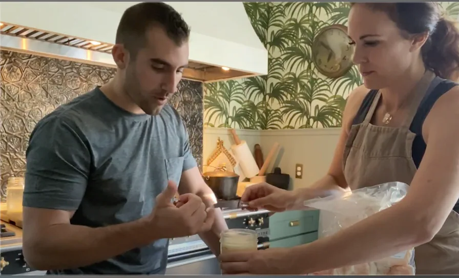

B386 · The Magic of Fat - SUET Spotlight with Anya Fernald
Hi {first_name},
Getting to hang out with a friend, a food mentor, and the co-founder of Belcampo Meat Company, Anya Fernald is always a treat!
 In this video Anya breaks down what suet is, where it comes from, how it has been used traditionally, how it’s made, and a ton more fascinating information for the food geeks out there. I hope you enjoy this video and be sure to check out Belcampo for the BEST grass-fed, grass-finished meats around. Use code SALEMI10 for 10% off when you order. Wishing you and your family a fantastic weekend, Mike |